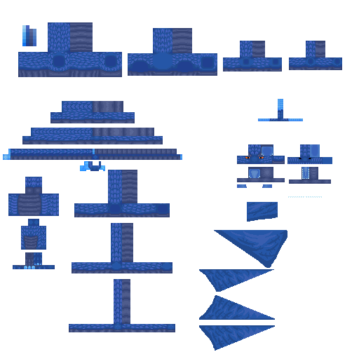
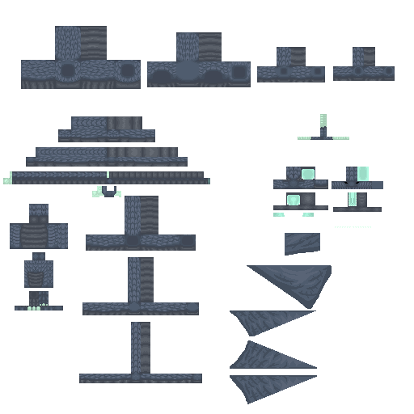
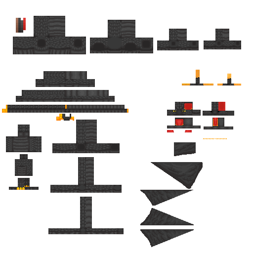

Mod documentation.
Memento Mori is built as a Luanti game with eight standalone mods. Each mod owns a specific domain — bosses, enemies, NPCs, maps, player logic, items, time, and cinematic trailer mode. This page covers how they work and how they fit together.
Load order & dependencies
Mods are loaded bottom-up. registered has no dependencies and loads first.
All eight mods
Click a tag to filter. Each entry lists what the mod exposes and any chat commands it registers.
registered
The foundation mod. Registers all custom nodes and items used by other mods — arena blocks, decorative pieces, weapons, and collectibles. No other mods depend on it loading before.
What it registers
- Arena wall, floor, and ceiling nodes
- Decorative arena props
- Weapon items (swords, shields)
- Collectible drop items
Used by
npc— NPC textures reference registered nodesenemy— drop loot from registered itemsboss— boss loot and arena effectstrailer— props referenced in scene setup
time
Controls the 24-hour day cycle and exposes a HUD clock for all players.
Wave spawning in the enemy mod reads the in-game time to decide when to start a wave.
Break times (wave trigger)
- 10:10 — morning break → wave 1–3
- 12:10 — lunch break → wave 4–6
- 14:15 — afternoon break → wave 7
API
time.get_hour() — returns current in-game hour (0–23).
time.get_minute() — returns current in-game minute (0–59).
npc
Manages non-combat NPCs in Arena 2: the six classroom teachers. Each teacher occupies a fixed room, displays subject-specific dialogue when approached, and despawns when a wave is active. Includes per-entity live-check spawn logic that retries every 3 seconds if a mapblock is not yet loaded.
-
/set_teacher_pos <subject>Teleports the named teacher to your current position. Requires server privilege. Useful for correcting spawn offsets after schematic changes.
Spawn logic
Every 3 seconds update_classroom_teachers() checks each teacher's objectref. If the ref is nil or the entity no longer has a position, it respawns. Teachers are removed when enemy.wave_active == true.
API
npc._teacher_refs[subject] — objectref for a specific teacher, or nil if not spawned.
enemy
Handles student enemy entities and the wave spawning system. Seven waves correspond to the seven boss levels. Each wave spawns 10 student enemies plus one boss. Level 7 skips students and spawns the final boss directly. Includes the dynamic BGM loop system: intro → begin2 → shuffled middle/bridge tracks.
Wave flow
- Time trigger →
enemy.wave_active = true - 10 students spawn at random arena positions
- Students eliminated → boss spawns
- Boss defeated →
enemy.wave_active = false - Victory sequence plays, next wave unlocks
Student stats (scale by level)
- HP: 1
- Damage: 1
- Size: 60% at level 1 → 100% at level 6
- Arena 2 isolation: players inside Arena 2 or riding Teinetarnagh are exempt from Arena 1 BGM and announcements
Sequence
- intro (20 s) → begin2 (30 s) → shuffled loop
- Loop pool: middle1/2/3 (30 s each), bridge1/2 (16 s), bridge3/4 (30 s)
API
enemy.wave_active — boolean, true while a wave is running.
enemy.is_exempt(player) — returns true if player should skip Arena 1 audio.
boss
Defines all seven boss entities with unique AI patterns, attack moves, and defeat sequences.
Each boss has a custom on_step behaviour. Higher levels introduce ranged attacks, area damage, and particle effects.
| Level | Name | HP | Signature attack |
|---|---|---|---|
| 1 | Bram | 100 | Drumsticks |
| 2 | Hugo | 150 | Dragon summon |
| 3 | Joachim | 200 | Undefined |
| 4 | Julian | 250 | Hot chocolate attack |
| 5 | Rosanne | 300 | Creator of weapons |
| 6 | Jan Willem | 350 | Bomb |
| 7 | Margriet | 450 | Summon all bosses |
Victory sequence
boss.return_player(player) — restores player state after the fight.boss.spawn_victory_dragon(pos) — spawns the Victory Dragon. See the Dragons page for full details.
API
boss._victory_dragon_obj — singleton objectref to the Victory Dragon, nil when not active.



player
Handles player initialisation, HUD elements, and combat stats. Sets starting inventory, registers player join/leave hooks, and controls respawn behaviour during active waves.
Model
Uses the standard character.b3d model (64×32 skin). Custom texture files per player skin are placed in mods/player/textures/.
map
Loads arena schematics on world creation. Currently manages two arenas:
Arena 1 (the primary combat arena) and Arena 2 (the classroom building, origin −330, 177, −440, 51×9×62 blocks).
Schematics are stored as .mts files in mods/map/schems/.
Arena 2 — classroom layout
- Size: 51 × 9 × 62 nodes
- Corridor: x = 20–32 (world x ≈ −310 to −298)
- Left rooms: world x = −320, z = −418 / −400 / −387
- Right rooms: world x = −289, z = −418 / −400 / −387
Schematic files
fietsarena.mts— Arena 1 (main combat arena)barlaeus_arena.mts— Arena 2 (classroom building)
trailer
Cinematic trailer mode. Hides the real player, spawns an invisible camera entity and a visible stunt double, then starts a wave. The camera follows the stunt double with close framing and wall-collision avoidance. Useful for recording footage without HUD clutter or player shadows.
-
/trailer startHides player, spawns camera + stunt double, starts next wave. Requires trailer or server privilege. -
/trailer stopRestores player, removes camera and stunt double, ends trailer mode. -
/trailer wave <N>Starts a specific wave (1–7) in trailer mode, overriding the normal time trigger.
Camera behaviour
Follows stunt double at close range. Probes for walls ahead and to the sides, adjusting velocity to avoid clipping. Clamped to arena bounds.
State
trailer.active — boolean.trailer.camera — camera objectref.trailer.stunt — stunt double objectref.trailer.player_pos — saved position for restoration.
Repository structure
A flat mods directory — each mod is a self-contained folder with init.lua and mod.conf.
Game root
game.conf— game name and engine settingsmods/— all eight mod foldersmenu/— main menu backgrounddocs/— this GitHub Pages site
Per-mod layout
mod.conf— name, description, dependsinit.lua— main logic (entry point)textures/— PNG textures for entities and nodessounds/— OGG audio filesmodels/— B3D 3D models (boss, player)